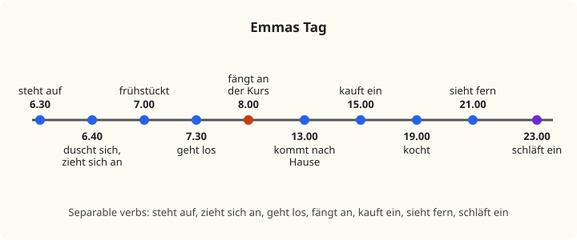

Lesson 13: Daily Routine and Separable Verbs¶
Der Alltag und die trennbaren Verben
Getting up, having a shower, getting dressed, setting off, shopping, tidying up, watching television, going out, falling asleep: the verbs of daily life are among the most useful in any language. In German, many of them belong to a special group, the separable verbs, whose first part breaks off and goes to the end of the sentence: aufstehen ("to get up") but Ich stehe um sieben auf. Many others are reflexive: they need a pronoun like myself, where English needs none: Ich ziehe mich an, "I get (myself) dressed". In this lesson you learn both groups, and the words that put the events of a day in order.
Learning outcomes
By the end of this lesson you will be able to:
- describe your daily routine from morning to night;
- use separable verbs such as aufstehen, anfangen, einkaufen, fernsehen in statements, questions, imperatives and with modal verbs;
- recognise inseparable prefixes such as be-, er-, ver- and stress verbs correctly;
- use reflexive verbs such as sich duschen, sich anziehen, sich beeilen with the reflexive pronouns;
- put events in order with zuerst, dann, danach, später, zum Schluss;
- say how often you do things with normalerweise, meistens, immer, oft, selten, nie.
13.1 Dialogue: an early morning¶
It is seven o'clock on a Monday. Jonas comes into the kitchen, half asleep. Emma is already having breakfast.
- Jonas: Guten Morgen … Warum bist du schon so früh wach? — Good morning … Why are you awake so early?
- Emma: Ich stehe jeden Tag um halb sieben auf. Mein Kurs fängt um acht an. — I get up at half past six every day. My course starts at eight.
- Jonas: Halb sieben! Normalerweise stehe ich erst um neun auf. Aber heute muss ich früh zur Uni. — Half past six! I don't normally get up until nine. But today I have to go to university early.
- Emma: Was machst du denn morgens? — So what do you do in the mornings?
- Jonas: Zuerst dusche ich, dann ziehe ich mich an, und dann trinke ich einen Kaffee. Frühstück esse ich selten. — First I have a shower, then I get dressed, and then I drink a coffee. I rarely eat breakfast.
- Emma: Ich frühstücke immer. Danach lese ich die Nachrichten, und um halb acht gehe ich los. — I always have breakfast. After that I read the news, and at half past seven I set off.
- Jonas: Und wann kommst du nach Hause? — And when do you get home?
- Emma: Um eins. Nachmittags kaufe ich ein oder räume auf, und abends sehe ich manchmal fern. — At one. In the afternoon I go shopping or tidy up, and in the evening I sometimes watch television.
- Jonas: Heute Abend kommen Tim und Lena vorbei. Wir gehen zusammen aus. Kommst du mit? — Tim and Lena are coming round this evening. We're going out together. Are you coming?
- Emma: Gern! Aber ich kann nicht lange bleiben. Morgen muss ich wieder früh aufstehen. — I'd love to! But I can't stay long. Tomorrow I have to get up early again.
- Jonas: Kein Problem. Oh, schon zehn nach sieben! Ich muss mich beeilen. — No problem. Oh, ten past seven already! I have to hurry.
- Emma: Dann beeil dich! Und vergiss deinen Schlüssel nicht! — Then hurry up! And don't forget your key!
Notice:
- aufstehen splits in two: Ich stehe um halb sieben auf. So do anfangen (fängt … an), einkaufen, aufräumen, fernsehen, vorbeikommen, ausgehen, mitkommen, losgehen.
- After a modal verb, the separable verb stays in one piece at the end: Morgen muss ich wieder früh aufstehen.
- Some verbs need a pronoun that refers back to the subject: ich ziehe mich an, ich muss mich beeilen, beeil dich!
- erst um neun means "not until nine".
13.2 Vocabulary: the day¶
Separable verbs¶
| Infinitive | In a sentence | English |
|---|---|---|
| aufwachen | Ich wache um sechs auf. | to wake up |
| aufstehen | Ich stehe um sieben auf. | to get up |
| anfangen (fängt an) | Der Kurs fängt um acht an. | to start, begin |
| aufhören | Die Arbeit hört um fünf auf. | to stop, end |
| losgehen | Ich gehe um halb acht los. | to set off (on foot) |
| abfahren (fährt ab) | Der Bus fährt um 7.40 ab. | to leave, depart (vehicle) |
| ankommen | Ich komme um neun an. | to arrive |
| zurückkommen | Wann kommst du zurück? | to come back |
| einkaufen | Ich kaufe im Supermarkt ein. | to go shopping |
| aufräumen | Ich räume mein Zimmer auf. | to tidy up |
| anrufen | Ich rufe meine Mutter an. | to phone, call |
| fernsehen (sieht fern) | Abends sehe ich fern. | to watch television |
| ausgehen | Am Freitag gehen wir aus. | to go out |
| mitkommen | Kommst du mit? | to come along |
| mitbringen | Ich bringe einen Kuchen mit. | to bring (along) |
| vorbeikommen | Komm doch vorbei! | to drop in, come round |
| einladen (lädt ein) | Ich lade dich ein. | to invite; to treat |
| abholen | Ich hole dich am Bahnhof ab. | to pick up, collect |
| aufmachen / zumachen | Mach bitte das Fenster zu! | to open / to close |
| einschlafen (schläft ein) | Ich schlafe schnell ein. | to fall asleep |
Table 13.1. Separable verbs. The prefix carries the stress: AUF-stehen, AN-fangen, EIN-kaufen.
Reflexive verbs¶
| Infinitive | In a sentence | English |
|---|---|---|
| sich duschen | Ich dusche mich. (or simply Ich dusche.) | to have a shower |
| sich waschen (wäscht) | Er wäscht sich. | to wash (oneself) |
| sich anziehen | Ich ziehe mich an. | to get dressed |
| sich ausziehen | Ich ziehe mich aus. | to get undressed |
| sich kämmen | Sie kämmt sich. | to comb one's hair |
| sich rasieren | Er rasiert sich. | to shave |
| sich beeilen | Beeil dich! | to hurry |
| sich setzen | Setzen Sie sich, bitte! | to sit down |
| sich ausruhen | Am Sonntag ruhe ich mich aus. | to rest |
| sich freuen | Ich freue mich. | to be pleased, glad |
| sich treffen | Wir treffen uns um sieben. | to meet (each other) |
| sich fühlen | Ich fühle mich nicht gut. | to feel |
Table 13.2. Reflexive verbs. Dictionaries list them with sich.
Time and frequency¶
| German | English |
|---|---|
| zuerst | first |
| dann | then |
| danach | after that |
| später | later |
| zum Schluss, schließlich | finally |
| normalerweise | normally, usually |
| meistens | mostly, usually |
| immer / nie | always / never |
| oft / manchmal / selten | often / sometimes / rarely |
| früh / spät | early / late |
| erst | only, not until (time) |
| schon | already |
| wieder | again |
| das Frühstück, frühstücken | breakfast, to have breakfast |
| das Mittagessen | lunch |
| das Abendessen | dinner, supper |
| der Alltag | everyday life |
| der Feierabend | the end of the working day, free time after work |
Table 13.3. Words for the day. frühstücken is an ordinary verb: ich frühstücke.
13.3 Grammar: separable and inseparable verbs¶
What a separable verb is¶
Many German verbs are made of a short prefix and a basic verb: auf + stehen, an + rufen, ein + kaufen, fern + sehen. Most of these prefixes are also prepositions or adverbs, and they change the meaning of the verb, rather like English get up, call up, come back, go out. In English the little word follows the verb; in German it is written in front of it in the infinitive, but separates from it in many sentences.
The common separable prefixes are: ab-, an-, auf-, aus-, ein-, fern-, los-, mit-, vor-, vorbei-, weg-, zu-, zurück-.
Where the prefix goes¶
In the present (and the simple past), when the verb stands in position 2 or position 1, the prefix goes to the end of the sentence, forming a sentence bracket like the one in Lesson 12:
- statement: Ich stehe jeden Tag um halb sieben auf.
- W-question: Wann fängt der Kurs an?
- yes-no question: Kommst du heute Abend mit?
- imperative: Ruf mich morgen an! Räumt bitte euer Zimmer auf!
The verb part is conjugated as usual, including vowel changes: anfangen → er fängt an, fernsehen → du siehst fern, einladen → sie lädt ein, abfahren → der Zug fährt ab.

| Infinitive | Sentence |
|---|---|
| aufstehen | Ich stehe um sieben auf. |
| anfangen | Der Film fängt um acht an. |
| einkaufen | Wir kaufen samstags ein. |
| fernsehen | Siehst du oft fern? |
| anrufen | Ruf mich bitte an! |
| mitkommen | Wer kommt heute mit? |
Table 13.4. Practice: the verb in position 2 (or 1), the prefix at the end.
When the verb does not separate¶
The prefix and the verb stay together, in one word, when the verb is in the infinitive at the end of the sentence, for example after a modal verb:
- Morgen muss ich früh aufstehen.
- Kannst du mich abholen?
- Willst du mitkommen?
They also stay together in subordinate clauses (Lesson 16), and in the perfect tense the ge- of the past participle goes between them: aufgestanden, eingekauft (Lesson 14).
Common mistake: forgetting the prefix
The prefix is part of the meaning, so leaving it out changes the verb. Ich stehe um sieben means "I am standing at seven", which makes little sense; Ich stehe um sieben auf means "I get up at seven". Ich rufe meine Mutter means "I call out for my mother"; Ich rufe meine Mutter an means "I phone my mother". In a long sentence, listen right to the end: the prefix may be the last word.
Inseparable prefixes¶
Eight prefixes never separate: be-, emp-, ent-, er-, ge-, miss-, ver-, zer-. Verbs with them behave like ordinary verbs, and the prefix is not stressed:
- besuchen: Ich besuche meine Oma. (be-SU-chen)
- verstehen: Verstehst du das?
- bekommen: Ich bekomme einen Brief. ("I get a letter", not "I become"!)
- erzählen: Er erzählt eine Geschichte. ("He tells a story.")
- vergessen: Vergiss deinen Schlüssel nicht!
- beginnen, bezahlen, verkaufen, empfehlen (to recommend), gehören (to belong).
The stress is a reliable guide: a stressed prefix separates (ANrufen → ich rufe an); an unstressed prefix does not (beSUchen → ich besuche).
Worked example: a separable verb in four sentences
Use einkaufen ("to go shopping") in four kinds of sentence.
- Statement, verb in position 2, prefix at the end: Ich kaufe heute ein.
- Starting with a time, the verb stays second: Am Samstag kauft Jonas im Supermarkt ein.
- With a modal verb, one word at the end: Wir müssen noch einkaufen.
- Imperative to a friend: Kauf bitte Milch ein!
13.4 Grammar: reflexive verbs and the order of events¶
Reflexive verbs and pronouns¶
A reflexive verb has an object that refers back to the subject, like English I hurt myself. German has many more of these verbs than English: sich anziehen ("to get dressed", literally "to dress oneself"), sich beeilen ("to hurry"), sich freuen ("to be glad"). The reflexive pronouns are the accusative pronouns of Lesson 8, except in the third person and the polite form, which all use sich:
| Person | Reflexive pronoun | sich anziehen |
|---|---|---|
| ich | mich | ich ziehe mich an |
| du | dich | du ziehst dich an |
| er, sie, es | sich | er zieht sich an |
| wir | uns | wir ziehen uns an |
| ihr | euch | ihr zieht euch an |
| sie, Sie | sich | sie ziehen sich an |
Table 13.5. The reflexive pronouns. sich is never written with a capital, even for Sie: Setzen Sie sich!
The reflexive pronoun goes straight after the conjugated verb, or after the subject if the subject follows the verb:
- Ich beeile mich.
- Morgens ziehe ich mich schnell an.
- Freust du dich?
- Ich muss mich beeilen.
In the imperative: Beeil dich! Beeilt euch! Beeilen Sie sich!
Some reflexive verbs are only reflexive (sich beeilen); others can also take an ordinary object: Ich wasche mich ("I wash myself") but Ich wasche das Auto ("I wash the car"). With a part of the body or clothes, German uses a dative reflexive pronoun, mir or dir, and the definite article: Ich putze mir die Zähne. ("I brush my teeth.") Ich wasche mir die Hände. ("I wash my hands.") Learn these as phrases.
sich treffen and sich freuen
sich treffen means "to meet (each other)": Wir treffen uns um sieben. Without sich, treffen takes an object: Ich treffe Ravi. sich freuen means "to be glad": Ich freue mich! With auf + accusative it means "to look forward to": Ich freue mich auf das Wochenende.
Telling the order of events¶
To describe a routine, link the steps with zuerst, dann, danach, später, zum Schluss. Each of them takes position 1, so the verb comes next and the subject follows it (Lesson 7):
- Zuerst dusche ich.
- Dann ziehe ich mich an.
- Danach frühstücke ich.
- Um halb acht gehe ich los.
- Zum Schluss sehe ich ein bisschen fern.
How often?¶
Frequency words usually come after the verb and the subject, or in position 1: Ich frühstücke immer. Ich sehe selten fern. Normalerweise stehe ich um neun auf.
erst with a time means "not until", and schon means "already": Ich stehe erst um neun auf. ("I don't get up until nine.") Emma ist schon wach. ("Emma is already awake.")

13.5 Practice¶
Separable or not?¶
| Infinitive | er form in a sentence |
|---|---|
| aufräumen | Er räumt sein Zimmer auf. |
| besuchen | Er besucht seine Oma. |
| anrufen | Er ruft seine Schwester an. |
| verstehen | Er versteht alles. |
| einladen | Er lädt uns ein. |
| bekommen | Er bekommt ein Geschenk. |
| fernsehen | Er sieht abends fern. |
Table 13.6. Practice: separable and inseparable verbs.
Reflexive pronouns¶
| Sentence | Pronoun |
|---|---|
| Ich ziehe mich an. | ich |
| Beeil dich! | du |
| Jonas rasiert sich. | er |
| Wir treffen uns um acht. | wir |
| Freut ihr euch? | ihr |
| Setzen Sie sich, bitte! | Sie |
Table 13.7. Practice: reflexive pronouns.
Jonas's Saturday¶
Read aloud.
- Am Samstag wacht Jonas erst um zehn auf. — On Saturday Jonas doesn't wake up until ten.
- Zuerst trinkt er einen Kaffee, dann duscht er. — First he drinks a coffee, then he has a shower.
- Mittags arbeitet er im Café. — At midday he works in the café.
- Um fünf kommt er zurück und ruht sich aus. — At five he comes back and rests.
- Abends gehen er und seine Freunde aus. — In the evening he and his friends go out.
- Er kommt oft erst um zwei Uhr nachts nach Hause. — He often doesn't get home until two in the morning.
Say it
Describe your weekday in eight sentences, from getting up to going to sleep. Use at least four separable verbs, two reflexive verbs, and zuerst, dann, danach, zum Schluss. For example:
Ich wache um sieben auf. Zuerst dusche ich, dann ziehe ich mich an. Danach frühstücke ich. Um acht gehe ich los. Die Arbeit fängt um neun an. Abends kaufe ich ein und sehe fern. Zum Schluss lese ich ein bisschen und schlafe ein.
13.6 Culture: the rhythm of the day¶
Early starts. The day starts early in the German-speaking countries. Schools often begin at about eight, or even earlier, and many offices and shops open at eight or nine; tradespeople may start work at seven. In return, many people finish work in the late afternoon and enjoy their Feierabend, the free time after work, a word with no exact English equivalent. Schönen Feierabend! is a friendly way to say goodbye to colleagues at the end of the day.
Meals. Breakfast (das Frühstück) is usually bread or rolls with butter, jam, honey, cheese or cold meats, or muesli, with coffee or tea; at weekends it may be a long, leisurely affair. Many people have a mid-morning snack, which has a different name in each region: die Brotzeit in Bavaria, die Jause in Austria, and in Switzerland das Znüni (from "at nine") in the morning and das Zvieri (from "at four") in the afternoon. Traditionally the hot main meal was lunch (das Mittagessen), and the evening meal was a simple, cold Abendbrot, "evening bread", with bread, cheese, cold meats and salad. Today many working people eat a light lunch and cook in the evening, but the tradition of the cold supper is still alive.
Mahlzeit! In many workplaces, especially in Germany and Austria, colleagues greet each other around lunchtime with Mahlzeit! ("mealtime!"), whether or not they are eating. Some people love the custom and others find it old-fashioned, but you will certainly hear it.
School and childcare. In Germany, schools traditionally ended at lunchtime, and children ate lunch at home. All-day schools (die Ganztagsschule) are now increasingly common, but in many places the school day still ends in the early afternoon.
13.7 Summary¶
Summary
- Separable verbs: stressed prefix (ab-, an-, auf-, aus-, ein-, fern-, los-, mit-, vorbei-, zu-, zurück-) goes to the end when the verb is in position 2 or 1: Ich stehe um sieben auf. Kommst du mit? Ruf mich an!
- With a modal verb the infinitive stays in one piece at the end: Ich muss früh aufstehen.
- Inseparable prefixes: be-, emp-, ent-, er-, ge-, miss-, ver-, zer-, unstressed: besuchen, verstehen, bekommen (= get).
- Reflexive pronouns: mich, dich, sich, uns, euch, sich: Ich ziehe mich an. Beeil dich! Setzen Sie sich! Body parts: Ich putze mir die Zähne.
- Order of events: zuerst, dann, danach, später, zum Schluss in position 1, verb next.
- Frequency: immer, meistens, oft, manchmal, selten, nie; erst um neun = not until nine.
13.8 Exercises¶
Exercise 1
Complete with aufstehen: Wann ___ du ___?
Answer
stehst … auf. Wann stehst du auf?
Exercise 2
Complete with anfangen: Der Film ___ um acht ___.
Answer
fängt … an. Der Film fängt um acht an. a → ä.
Exercise 3
Put in order: ich / heute / muss / einkaufen.
Answer
Ich muss heute einkaufen. Ich muss heute einkaufen. With a modal verb, the separable verb stays together at the end.
Exercise 4
Give the du imperative of anrufen, with "me": "Call me!"
Answer
Ruf mich an! Ruf mich an!
Exercise 5
Separable or inseparable? verstehen.
Answer
Inseparable. ver- never separates: Ich verstehe das.
Exercise 6
Complete with the reflexive pronoun: Wir treffen ___ vor dem Kino.
Answer
uns. Wir treffen uns vor dem Kino.
Exercise 7
Complete with the reflexive pronoun: Er rasiert ___ jeden Morgen.
Answer
sich. Er rasiert sich jeden Morgen.
Exercise 8
Translate: "I don't get up until ten on Sundays."
Answer
Sonntags stehe ich erst um zehn auf. (Or Am Sonntag stehe ich erst um zehn Uhr auf.)
Exercise 9
Correct the mistakes: Ich aufstehe um sieben. Dann ich ziehe an mich.
Answer
Ich stehe um sieben auf. Dann ziehe ich mich an. The prefix goes to the end; after dann the verb comes second; the pronoun follows the subject, and the prefix an goes to the end.
Exercise 10
Write four sentences about Emma's afternoon and evening from Figure 13.2, starting with Um eins, Dann, Abends and Zum Schluss.
Answer
Um eins kommt Emma nach Hause. Dann kauft sie ein. Abends kocht sie und sieht fern. Zum Schluss schläft sie um elf ein.
13.9 Quiz¶
Quiz: daily routine and separable verbs
Exercise 11
Put the words in order: "I get up at seven."
Words: um / stehe / Ich / sieben / auf.
Answer
Ich stehe um sieben auf.
Exercise 12
Morgen muss ich früh ___.
- stehe auf
- aufstehen
- auf stehen
- stehen auf
Answer
aufstehen
After a modal verb, the separable verb stays in one piece at the end.
Exercise 13
Which verb is NOT separable?
- anrufen
- einkaufen
- besuchen
- fernsehen
Answer
besuchen
be- is an inseparable prefix.
Exercise 14
Der Zug ___ um 8.15 ___. (abfahren)
Answer
fährt · ab
Exercise 15
Beeil ___! Der Bus kommt!
Answer
dich
Exercise 16
Match the person to the reflexive pronoun.
| A | B |
|---|---|
| ich | uns |
| er | euch |
| wir | mich |
| ihr | sich |
Answer
ich — mich; er — sich; wir — uns; ihr — euch
Exercise 17
Tap the wrong word.
Ich anrufe meine Mutter jeden Sonntag.
Answer
Wrong word: anrufe.
Corrected: Ich rufe meine Mutter jeden Sonntag an.
anrufen is separable: the prefix an goes to the end.
Exercise 18
Say it aloud.
Zuerst dusche ich, dann ziehe ich mich an.
Answer
Say: Zuerst dusche ich, dann ziehe ich mich an.
Exercise 19
Write what you hear.
Dictation. Have someone read the sentence aloud, then write it down.
Am Wochenende kaufe ich im Supermarkt ein.
Answer
Am Wochenende kaufe ich im Supermarkt ein.